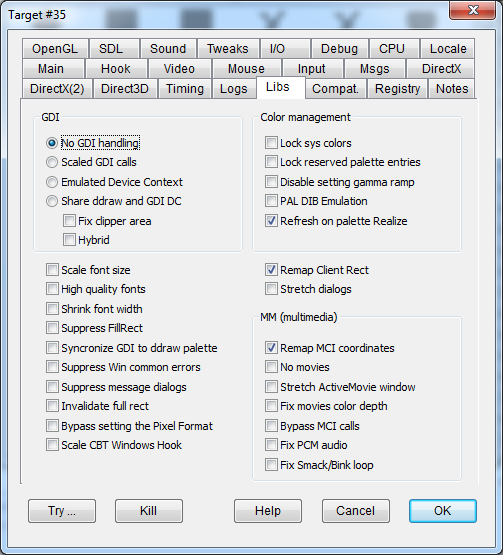

|
Remap Client Rect |
CLIENTREMAPPING |
Enabled by default. Makes DxWnd remap the window client coordinates so that the program receives the same values as if the program was running in fullscreen mode. |
|
Scale font size |
FIXTEXTOUT |
Tries to scale font parameters to fit the window stretching. |
|
High quality fonts |
QUALITYFONTS |
Flag to force antialiasing font style. |
|
Suppress FillRect |
NOFILLRECT |
It is quite common for a fullscreen program to start its activities by clearing the desktop through a FillRect of the whole desktop area. Though this operation is usually intercepted and redirected to the windowed area, if it fails this flag bypasses that FillRect call. |
|
Syncronize GDI to ddraw palette |
SYNCPALETTE |
Makes DirectDraw palette emulation aware of palette changes made through GDI calls. |
|
Suppress Win common errors |
NOWINERRORS |
Makes system libraries return success in all cases where the error could depend on the windowed environment, but can be safely ignored. Currently, it only suppresses errors in the DestroyWindow user32 call. |
|
Suppress message dialogs |
NODIALOGS |
Useful for suppressing error messages. |
|
Stretch dialogs |
STRETCHDIALOGS |
Intercepts the dialogs creation calls and scales the dialog definition to fit the current scaling ratio. The operation is performed only once at dialog creation only, so any further window stretching operation won't be reflected in a updated dialog size. |
|
Invalidate full rect |
INVALIDATEFULLRECT |
Extends the Invalidate RECT parameter so that the whole window is always updated. |
|
Bypass setting the Pixel Format |
NOSETPIXELFORMAT |
By default, when an emulated mode is selected, the SetPixelFormat operation is bypassed to avoid useless interferences with the desktop settings. However, in some cases this operation is required to make the program working correctly, so this flag forces the SetPixelFormat operation whenever requested. |
|
Scale CBT Windows Hook |
SCALECBTHOOK |
Scales the window coordinates sent to the CBT hook callback. Fixes "Spearhead" window calculations that affect both the video rendering and the mouse control. |
These flags determine the strategy for managing pure GDI programs or, in the most complicated case, hybrid games that mix GDI calls with other renderers like DirectDraw or Direct3D.
|
No GDI handling |
GDINONE |
Disables video-related GDI/user32 API hooking. |
|
Scaled GDI calls |
HOOKGDI |
Scales GDI API coordinates to fit the window stretching. |
|
Emulated Device Context |
GDIEMULATEDC |
Handle an emulated GDI device context. |
|
Share ddraw and GDI DC |
SHAREDDC |
Shares the window DC (device context) with the DirectDraw primary surface DC. These contexts can have very different interactions in fullscreen and windowed modes. In windowed mode, what usually happens is that one DC layer overlaps the other and produces flickering. This option merges the graphic content of GDI on top of the primary surface of DirectDraw. |
|
Fix clipper area in shared DC |
FIXCLIPPERAREA |
In SHAREDDC mode, this flag tries to compensate for clipping problems between the program window and other windows on the desktop. It is not currently fully implemented, so it is discouraged for now. |
|
Hybrid |
SHAREDDCHYBRID |
Reduces "Star Treck: Armada" problems. |
|
Lock Sys Colors |
LOCKSYSCOLORS |
Suppresses the SetSysColors API that changes the colors of system elements, such as window borders and panel backgrounds. Some fullscreen games change these colors when they start and revert them when they exit, which is unnoticeable when these games run in fullscreen mode but very noticeable when they are run in a window. The only known game that needs this option is Western Front. |
|
Lock reserved palette entries |
LOCKRESERVEDPALETTE |
This option simulates a lock on the system palette entries (usually 20 colors, corresponding to 0-9 and 246-255 in the 8-bit, 256-color palette entries), preventing DirectDraw calls from updating these values. |
|
Disable setting gamma ramp |
DISABLEGAMMARAMP |
Prevents the API from altering the default gamma ramp, making the screen lighter or darker. Since the API affects the whole screen, this flag is mainly useful to prevent a game's gamma settings from affecting your entire desktop. |
|
PAL DIB Emulation |
PALDIBEMULATION |
Emulate 8bit palettized DIBs: fixes "G-Nome". |
|
Refresh on palette Realize |
REFRESHONREALIZE |
Flag to properly handle "Titanic Adventure out of time". |
|
Remap MCI coordinates |
REMAPMCI |
Finds and scales the movie coordinates that may be embedded in the MciSendString command string. It may fix movie sizes when they are played using the MciSendString winmm call. |
|
No movies |
NOMOVIES |
Skips movies whenever possible - that is, when performed through explicit movie handling calls. |
|
Stretch ActiveMovie window |
STRETCHMOVIES |
Several window classes are devoted to playing multimedia. This flag detects the known multimedia windows and stretches their size to cover the full main window area. |
|
Fix movies color depth |
FIXMOVIECOLOR |
Fixes the color depth of VFW (Video For Windows) movies by forcing their value to the color depth of the virtual desktop. |
|
Bypass MCI calls |
BYPASSMCI |
Several games perform MCI operations (e.g. to check for a CD-ROM) that are not essential and may cause errors. This flag bypasses MCI calls when possible and returns a positive result. |
|
Fix PCM audio |
FIXAUDIOPCM |
Support stereo PCM audio by downgrding the audio channels to 1 (mono). Fixes "Capcom Arcade Hits Vol 1" audio problems. |
|
Fix Smack/Bink loop |
FIXSMACKLOOP |
Fixes a Smack/Bink loop by inserting processmessage and blit operations between frames. During the playback of Smack movies (which typically have a .smk extension), the screen may not get updated, which is detected by the OS and killed as a nonresponsive program. The intro movies in the game "Galapagos" benefit from this flag. |